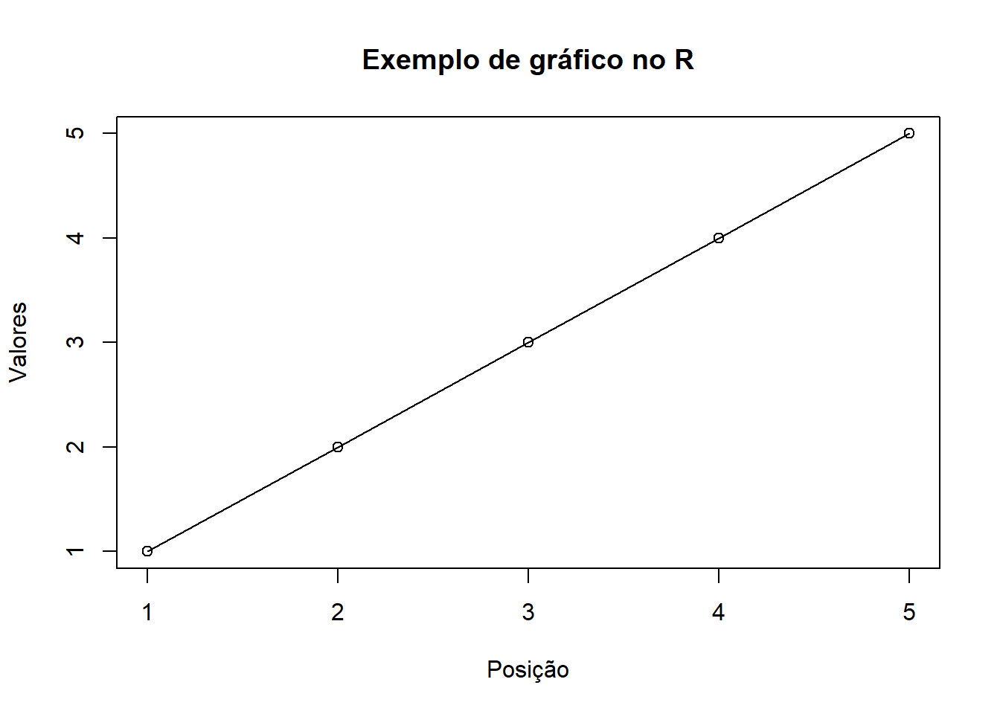

Código
knitr::include_graphics("C:/Users/W28/Downloads/relatorio-estprob/criadores_r.png")


Estatística e Probabilidade
Prof. Ben Dêivide (DEFIM/CAP/UFSJ)
A partir das aulas iniciais do curso de R Básico 2024, ministradas pelo professor Ben Dêivide, foi possível ter o primeiro contato com a linguagem R e com o ambiente RStudio. Durante essas aulas, foram apresentados conceitos fundamentais relacionados ao funcionamento da linguagem, bem como sua aplicação na área de estatística.
O R é amplamente utilizado para análise de dados, sendo reconhecido pela sua capacidade de manipular informações e gerar gráficos de forma eficiente. Além disso, trata-se de um software livre, o que contribui para sua ampla utilização no meio acadêmico.
Dessa forma, este relatório tem como objetivo apresentar os principais conceitos aprendidos nas aulas iniciais, juntamente com alguns exemplos práticos desenvolvidos no ambiente R.
Compreender os conceitos iniciais da linguagem R e sua aplicação na análise de dados.
O R é uma linguagem de programação voltada para análise estatística e manipulação de dados. Sua estrutura é baseada no uso de objetos e funções, o que permite uma organização eficiente das informações.
Segundo Batista e Oliveira (2022), o R opera a partir do princípio de que tudo pode ser tratado como objeto, e todas as operações são realizadas por meio de funções. Essa característica torna a linguagem flexível e poderosa para análises.
Além disso, o R é um linguagem interpretada, ou seja, os comandos são executados diretamente no console, permitindo resultados imediatos. O ambiente RStudio auxilia nesse processo, organizando o espaço de trabalho em diferentes áreas, como console, scripts e ambiente global.
knitr::include_graphics("C:/Users/W28/Downloads/relatorio-estprob/criadores_r.png")
A atividade foi desenvolvida a partir das aulas iniciais do curso, utilizando o software R e o ambiente RStudio.
Inicialmente, foi realizada a instalação dos programas e a exploração da interface. Em seguida, foram executados comandos simples no console, com o objetivo de compreender o funcionamento da linguagem.
Durante a prática, foram criados objetos, realizados cálculos matemáticos e aplicadas funções básicas. Também foram construídos exemplos simples com vetores e gráficos, permitindo uma melhor compreensão do comportamento do R.
Durante as atividades, foi possível observar como o R trabalha com objetos e funções.
Criação de objetos
x <- 10
y <- 5Os valores foram armazenados em objetos, permitindo sua reutilização em outras operações.
Operações matemáticas
x + y[1] 15x * y[1] 50x / y[1] 2Essas operações demonstram como o R executa cálculos de forma direta no console.
Criação de vetor
numeros <- c(1, 2, 3, 4, 5)
numeros[1] 1 2 3 4 5O vetor permite armazenar vários valores em uma única variável.
Cálculo de média
mean(numeros)[1] 3A função mean() calcula a média dos valores, facilitando a análise dos dados.
Gerando sequências
seq(1, 10, by = 2)[1] 1 3 5 7 9Essa função gera uma sequência numérica com intervalo definido.
Gráfico simpleS
plot(numeros, type = "o",
main = "Exemplo de gráfico no R",
xlab = "Posição",
ylab = "Valores")
O gráfico permite visualizar o comportamento dos dados de forma mais clara.
De modo geral, os resultados mostram que o R é uma ferramenta prática e eficiente para manipulação e análise de dados. No entanto, também foi possível perceber que pequenos erros de digitação podem gerar falhas na execução, o que exige atenção durante o uso.
A realização desta atividade permitiu o desenvolvimento de um primeiro contato com a linguagem R e com o ambiente RStudio, possibilitando a compreensão de seus conceitos fundamentais e de sua aplicação inicial na área de Estatística e Probabilidade. Ao longo das aulas, foi possível perceber que o R possui uma estrutura lógica baseada no uso de objetos e funções, o que contribui para uma organização mais eficiente dos dados e para a execução de análises.
Apesar das dificuldades iniciais, principalmente relacionadas à adaptação ao ambiente, à interpretação de mensagens de erro e à configuração do diretório de trabalho, a prática desenvolvida durante as atividades contribuiu para uma melhor compreensão do funcionamento da linguagem. Esses desafios fazem parte do processo de aprendizagem e evidenciam a importância da prática contínua para o domínio da ferramenta.
Além disso, a utilização do RStudio mostrou-se essencial, uma vez que sua interface facilita a visualização dos objetos criados, a execução de comandos e a organização dos scripts. Isso torna o processo de aprendizado mais acessível, principalmente para iniciantes.
Os exemplos práticos realizados, como a criação de objetos, execução de operações matemáticas, construção de vetores e geração de gráficos, permitiram observar na prática como o R pode ser utilizado para análise e interpretação de dados. Esses recursos demonstram o potencial da linguagem para aplicações mais avançadas ao longo da formação acadêmica.
Dessa forma, conclui-se que o R é uma ferramenta relevante e eficiente para análise de dados, sendo amplamente aplicada no meio acadêmico e profissional. Seu aprendizado, embora desafiador no início, tende a se tornar mais intuitivo com o tempo e a prática, contribuindo significativamente para o desenvolvimento de habilidades na área de Estatística e Probabilidade.
BATISTA, B. D. O.; OLIVEIRA, D. A. B. J. R básico. 1. ed. Ouro Branco, MG: [s.n.], 2022. p. 321